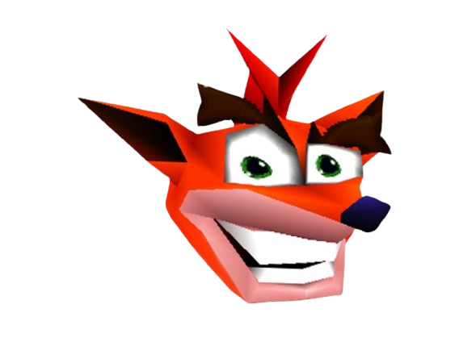
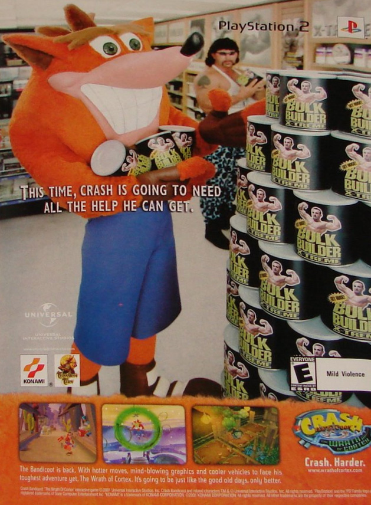
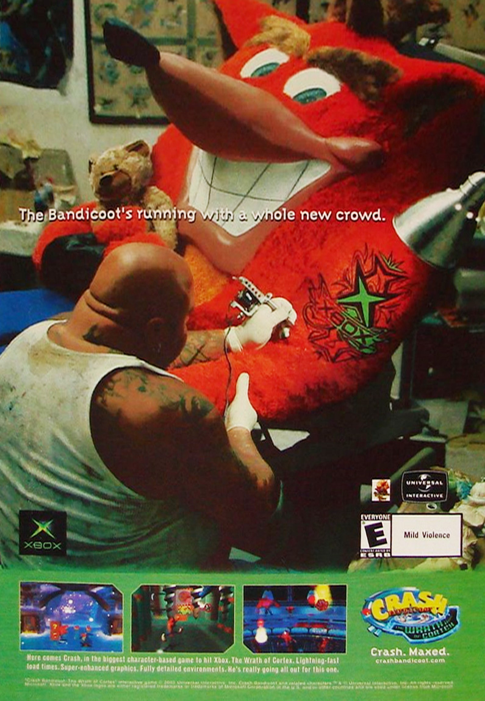
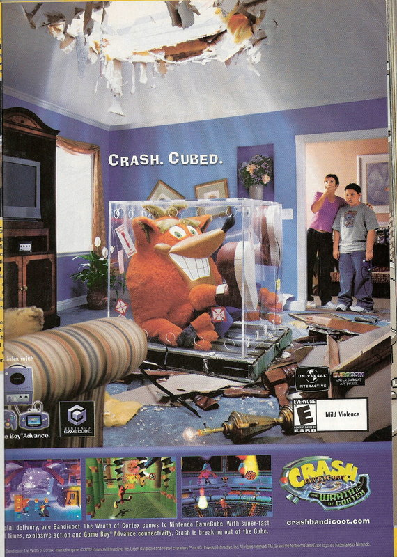
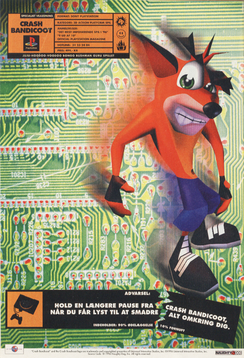
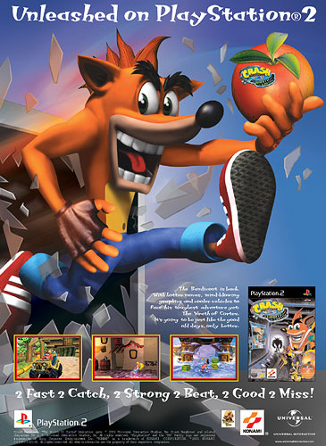
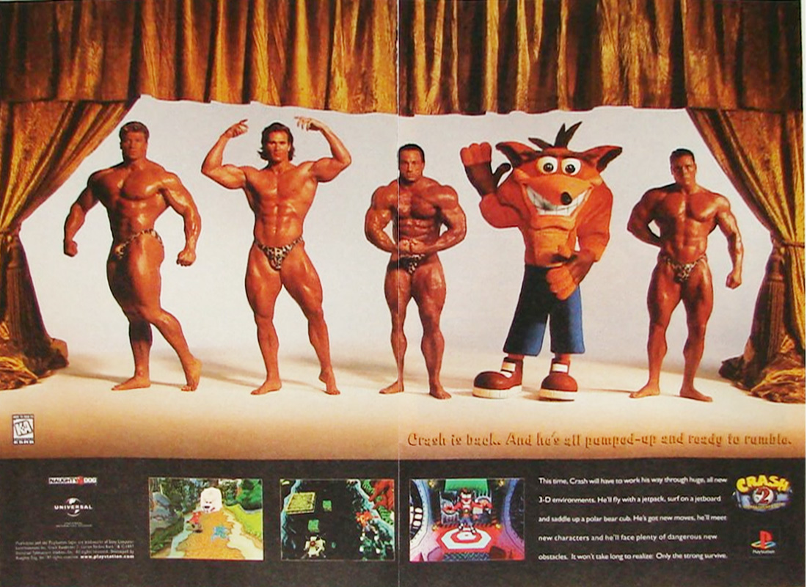
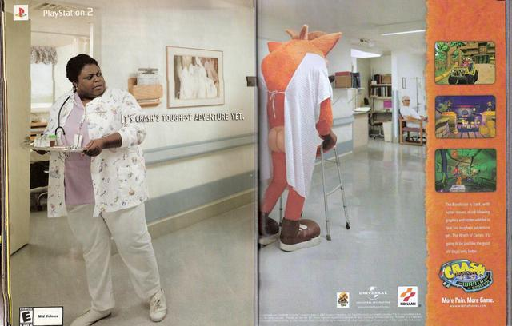
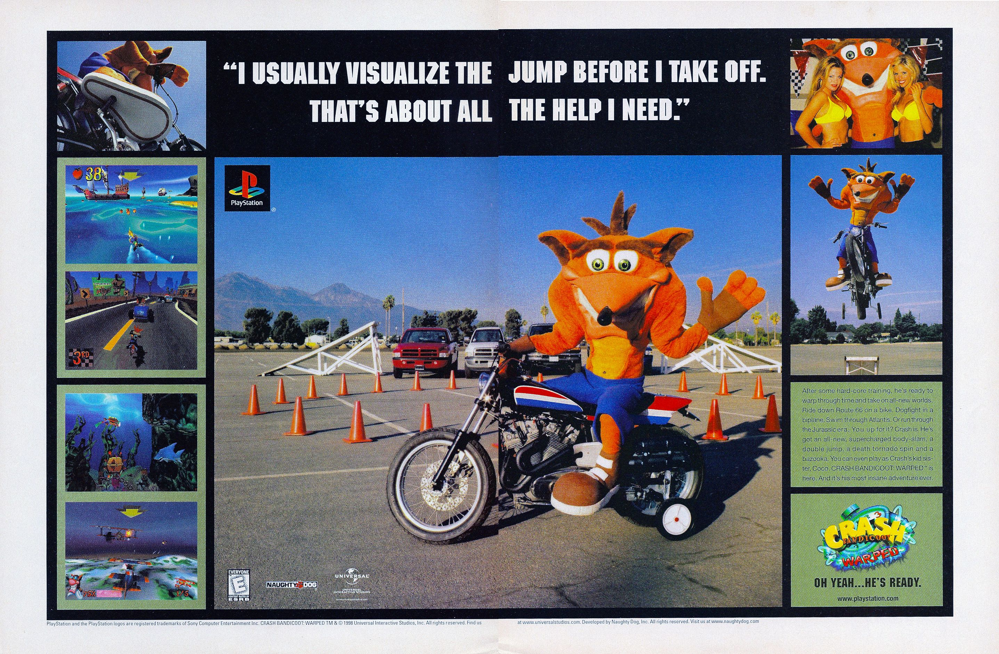
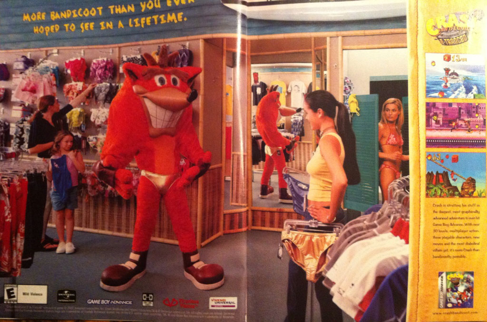

O mais famoso marsupial dos games
Acervo de comerciais do crash:





Ultimas noticias
Crash choca ao invadir fisiculturismo

Nesta segunda-feira o bandicoot mais famoso do mundo dos games protagonisou uma cena chocante para o mundo do fisiculturismo.
durante a atual edição do mais aclamado campeonato de fisiculturismo, mr olympia, crash sobe no palco de repente, chocando a banca
com seus ombros e seu "triangular shape"
Mesmo sem levar o premio final, crash entra para a historia como o primeiro marsupial a participar do mr olympia.
EMERGENCIA MÉDICA!!

Durante o final de semana passado, o senhor Bandicoot foi internado no hospital dona helena com um caso sério de cefaléia e reclamando de perda de LCL
alem de sisntomas visuais e motores. Apesar das acusações sobre um possisvel caso de abuso de substancias, os medicos não viram nada no exame toxicológico. Acredita se ser um caso de enxaqueca com aura
Estréia em time de motocross freestyle

Surprendento a todos, o marsupial dos games inicia nova carreira no motocross, "Sempre tive uma paixão pelas ruas e pelo ronco do motor" diz o mascote favorito da sony.
Polemico caso de amnésia

Após meia semana desaparecido, Mr crash é encontrado em uma conveniencia no novo méxico apenas de Cueca
segundo os médicos, ele teria tido uma amnésia e não se lembraria de nada, acreditase que o que causaria isso seria um estado de fuga.